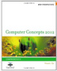

Module 6: Research

Examine 1 of the following: Listen: (optional) Interact: http://interactives.mped.org/view_interactive.aspx?id=739&title= What is one thing new you learned (‘aha’ moment) that you hadn’t thought about before? How can you use your new knowledge? Be sure to cite your sources. Reply to at least 2 others on the forum. Reminder: All posts should be appropriate for public viewing. Be sure and provide feedback to others who post. Find 1 thing you liked and 1 thing you feel they could improve on. Be professional and remember that words may be taken wrong, if you’re not careful on how you say things. Additional Resources: http://www.doingmediastudies.com/?page_id=2 http://athome.harvard.edu/programs/fym/preview.html http://www.youtube.com/watch?v=sfout_rgPSA&feature=player_embeddedRead 1 of the following:
Watch 1 of the following: (optional)
Forum: Go to course site and post your reflection.